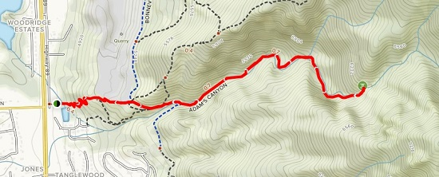

Adams Canyon Trail
General Trail Information
Adams Canyon Trail is a 3.4 mile heavily trafficked out and back
trail located near Kaysville, Utah that features a waterfall and
is rated as moderate. The trail is primarily used for hiking and
nature trips and is accessible year-round. It has great views of
the Great Salt Lake and Antelope Island at the start. The trail
can sometimes be a little muddy. Beautiful hike along the stream
the entire way. The falls are amazing and worth the effort!
Difficulty Level - Moderate
Distance - 3.4 miles
Elevation Gain - 1,430 ft
Route Type - Out and Back
Dogs are alowed on this trail.
Directions from Salt Lake City:
Travel north on Highway 89, Take the first right past Oakhills
Road (Layton City Water Tank). Take another right (south) on the
frontage road. Park at the end of pavement at fenced off reservoir.
Trail starts on north side of the reservoir. This trail has good
access to the Bonneville Shoreline Trail.

Reviews
Pictures